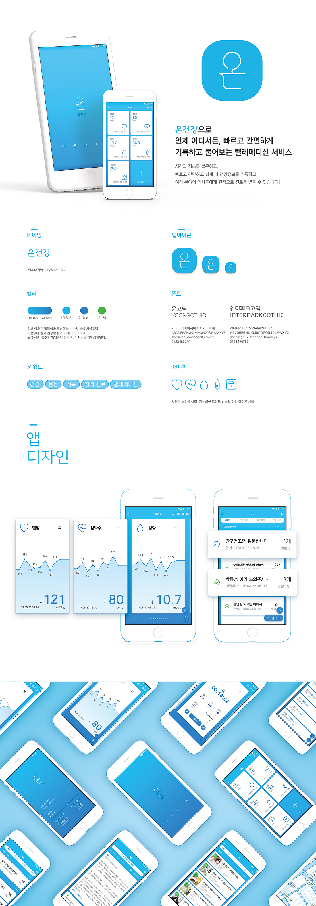

<div class="article">
	<div class="article_cover">
		<div class="article_cover_title">온건강 앱디자인</div>
		<div class="article_cover_info">
			<div class="article_cover_list article_cover_list_tags">
                <span class="article_cover_list-tag bold">참여도: 개인작업(졸업작품)</span>
				<span class="article_cover_list-tag cate">앱디자인</span>
                <span class="article_cover_list-tag cate">배너</span>
                <span class="article_cover_list-tag">포토샵</span>
				<span class="article_cover_list-tag">일러스트레이터</span>
            </div>
            <div class="article_cover_desc">
				1인가구가 지속적으로 증가하며, 바뻐지는 현대 사회 속에서 빠르게 원격 진단을 받을 수 있는 앱을 기획하였습니다. 운동을 포함한 여러 건강 데이터를 기록하여 원격으로 전문가에게 진단을 받으며, 진단을 토대로 근처 병원과 약국을 안내해줍니다.
            </div>
		</div>
	</div>
	<div class="article_body">
		<div class="article_img_box">
			
			<div class="article_img_cover"></div>
		</div>
		<div class="article_img_box">
			
			<div class="article_img_cover"></div>
		</div>
	</div>
</div>